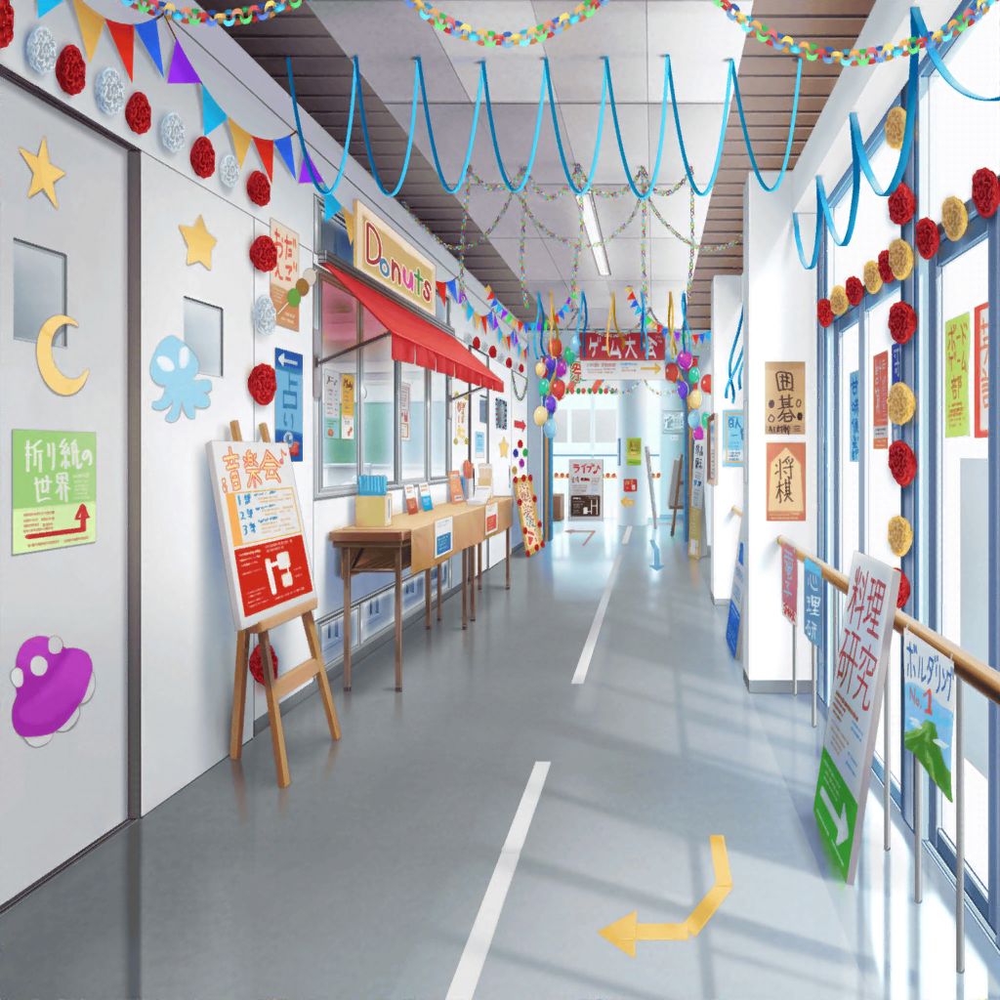
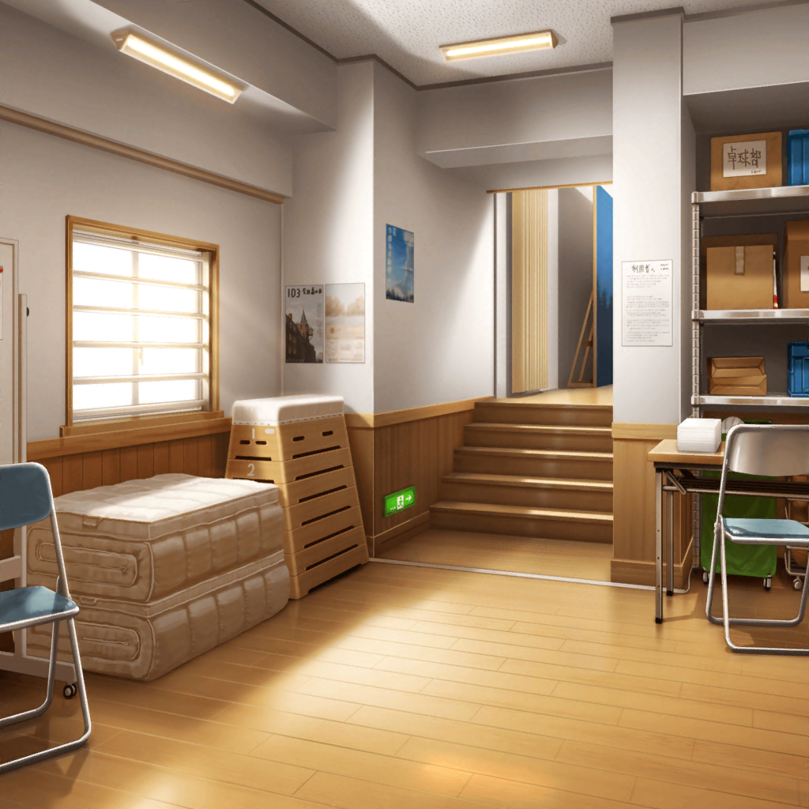
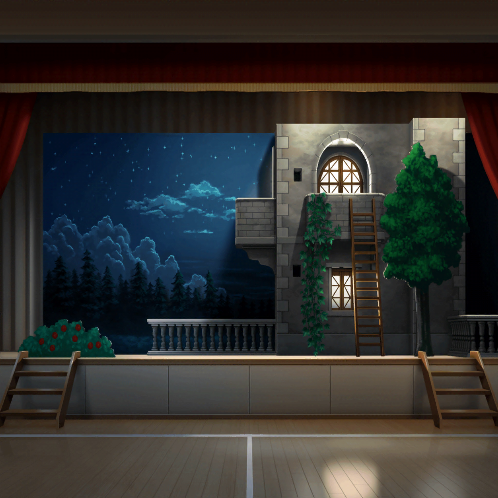

数日後
本番当日
生徒会メンバーA
ああ、助かった！ 羽沢さん、列整理ヘルプお願い！
つぐみ
わ、わかった！
生徒会メンバーA
予想以上にすごい人だったから、人だかりに巻き込まれて
流されないようにね〜！
つぐみ
う、わあ……すごい人……！
気をつけないと、本当に人に流されちゃいそう……！
つぐみ
よ、よーし……がんばらなきゃっ！
『ロミオとジュリエット』を見たい方は、２列に並んで
ゆっくり入場してくださーい！
つぐみ
ゆっくりにゅうじょ……ひゃっ！
観客A
白鷺千聖が出るんでしょ？ 超たのしみーっ！
早く見たーい！
観客B
このあいだの舞台も、すっごく評判良かったもんね〜！
早く入場して、いい席で見なくちゃっ
つぐみ
あわわ、人の波に流されて……！
ふんばれ、ふんばれ私……っ！
つぐみ
お、押さないでー！ 押さないでくださーいっ！！
わ、わあ〜！！
つぐみ
ち、千聖さん、瀬田先輩、麻弥先輩……がんばってくださ〜い〜！

千聖
……
薫
……
麻弥
千聖さん！ 薫さん！
千聖
麻弥ちゃん。どうしたの？
麻弥
本番前に応援しに来ましたっ。……お邪魔でしたか？
千聖
いいえ。ありがとう。私は彩ちゃんと違って、
本番には強いから
麻弥
あはは……千聖さん、がんばってくださいっ。
ジブンも裏方でガッチリ支えますからっ
千聖
ええ、ありがとう
演劇部員A
そろそろ本番でーす！
準備、お願いしますっ！
薫
さあ、行こう。ジュリエット

演劇部員A
ただいまより、演劇部による特別公演
『ロミオとジュリエット』を上演いたします――

ジュリエット
『ああ、ロミオ、ロミオ！ どうしてあなたはロミオなの？』
ロミオ
『ジュリエット！ 私はここだ！』
ジュリエット
『ロミオ！ どうしてここへ？ 庭の塀は高くて、乗り越えるのは
難しいはず。それに、家の者に見つかればあなたは……っ！』
ロミオ
『恋の翼があれば、こんな塀なんてことないさ』
ジュリエット
『ロミオ……あなたが敵だといっても、それはあなたの名前だけ。
モンタギューの名前を捨てようが、あなたはあなた』
ジュリエット
『……名前がなんだというの？ バラは他の名前で呼ぼうとも
あの甘い香りは変わらないわ』
ロミオ
『……そう。名前など無意味なもの。僕は僕。君は君だ。』
ジュリエット
『……っ！ ロミオ……っ！』
麻弥
千聖さん、薫さん、すごい歓声ですよ！
薫
本当だね……すばらしい
千聖
鳴り止まないわね
生徒A
薫さん、千聖さん！ カーテンコールをやりましょう！
お客さんの歓声、止む気配がないですよ！ すごい！！
薫
もちろんだよ。行こう、千聖。
歓声が私達を待っている
千聖
ええ、もちろんよ